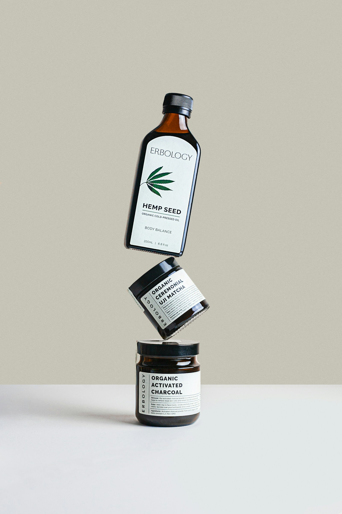
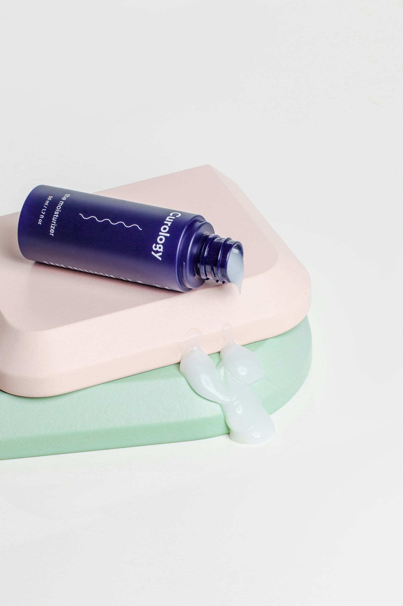
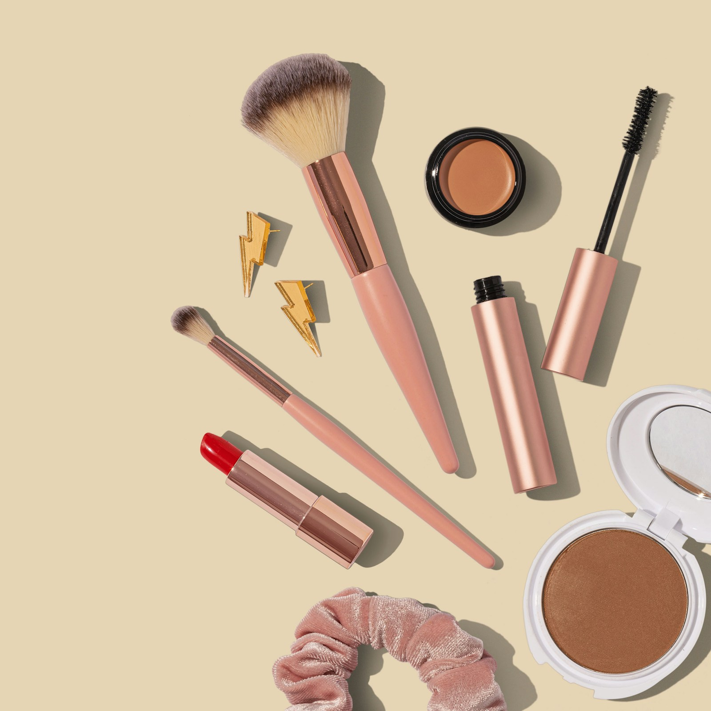
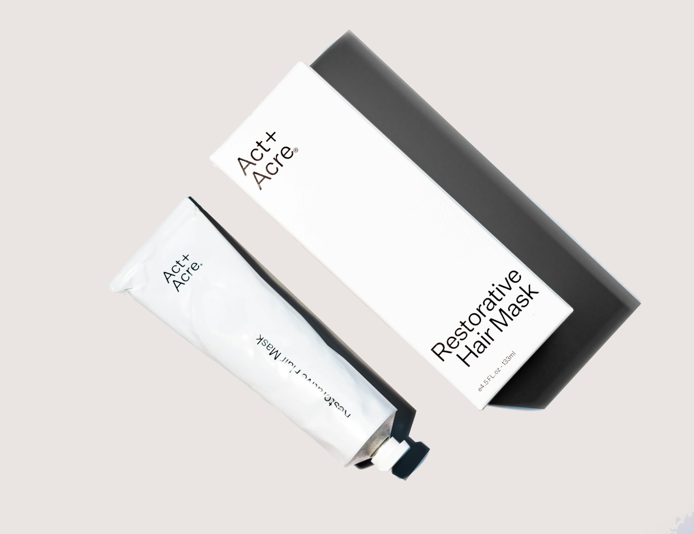

Find your five-minute moment.
Keep the things you love within reach. A simple routine you enjoy is one you’ll come back to.
A soft touch. A quiet glow. Beauty essentials for the little moments that make you feel like you.
Find your glow ↗
THE ART OF A LITTLE SELF-LOVEA considered collection of soft textures and luminous finishes. Find the one that feels like you.

SLOW DOWN. SOFTEN UP.Make a little space in your day. A few unhurried moments, a favourite texture, a touch of colour. That’s your kind of beauty.
Begin with clean skin and a moment to yourself.
Reach for a serum, then your favourite moisturiser.
A wash of colour. A soft lip. Whatever feels right.

Starlight began with a simple idea: the most beautiful part of your routine should be how it makes you feel.
We’re drawn to the quiet things. The warmth of morning light. A colour that lifts your mood. The lovely ritual of taking care of yourself. This is our invitation to find a little beauty in the everyday.

✧Small ideas to make your everyday routine feel a little more intentional.
Keep the things you love within reach. A simple routine you enjoy is one you’ll come back to.
A muted rose today, a little more colour tomorrow. There’s no one way to feel beautiful.
Put down your phone. Take a slow breath. Let your beauty ritual be a moment that belongs to you.
Use the Skincare and Makeup filters to explore. Start with the textures and colours that fit your routine, then add something that makes you smile.
Our online shop opens soon. Discover the collection and save your favourites in your beauty bag while we prepare for launch.
Delivery locations, shipping costs, and timelines will be announced when the shop launches.
Follow the product label. Try one new product at a time and patch test before including it in your routine.